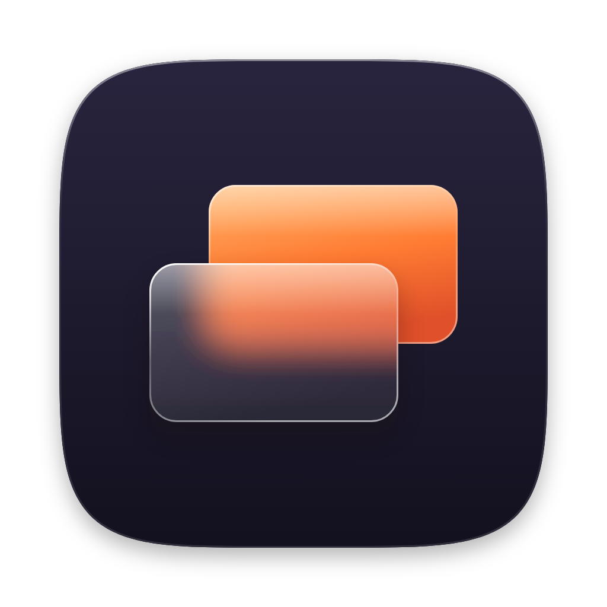
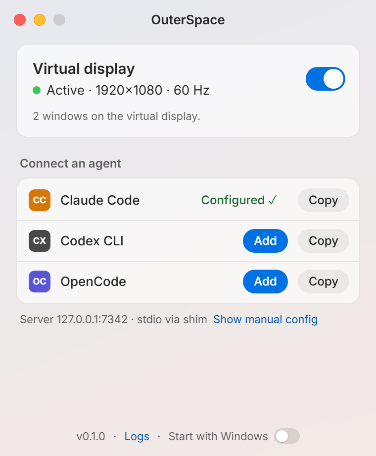

A real display
Not a minimized window or a hidden desktop: Windows sees a monitor, so Chrome, VS Code and DirectX apps render on the GPU exactly as they would on yours.

OuterSpaceOuterSpace adds a virtual display to Windows and hands it to AI agents over MCP. They open apps, look, click and type there — while you keep your screen, your mouse and your keyboard.
Windows 11 · Free and open source (MIT) · Version 0.1.1

OuterSpace lives in the tray. Flip the switch and a real 1920×1080 display appears just beside yours — the first time, it installs Parsec's signed display driver with one permission prompt.
Click Add next to Claude Code, Codex CLI or OpenCode. Any other MCP client can launch outerspace-mcp.exe over stdio.
“Use OuterSpace to open Edge on example.com and tell me what it says.” The agent launches, looks and clicks on its own display. You don't see a thing unless you want to.
Not a minimized window or a hidden desktop: Windows sees a monitor, so Chrome, VS Code and DirectX apps render on the GPU exactly as they would on yours.
Clicks and keystrokes go straight to the agent's app as messages — your cursor and focus never move. For apps that need real input, it waits until you pause and borrows them for about 40 ms.
Apps open directly on the virtual display without stealing focus. If one wanders back to your screen or grabs the foreground, OuterSpace brings it back and returns your focus.
One-click setup for Claude Code, Codex CLI and OpenCode — comments in your config files are kept and a backup is saved. If OuterSpace isn't running, the agent starts it.
The server listens on 127.0.0.1 only, behind a token your agents' configs never see. Web pages can't reach it, and every action is logged. Switched off, it refuses everything.
With the display on and the window closed: about 0.04% CPU and 40 MB of memory. Screenshots of the whole display take around 70 ms.
Coordinates are always relative to the virtual display, so the agent never touches yours.
statusIs it on, and wherelaunchOpen an app on the displaylist_windowsWhat's open therescreenshotSee the display or one windowclickClick, double-click, right-clicktype_textType into the focused fieldpress_keysEnter, Tab, Ctrl+S…scrollWheel, both directionsmove_windowFill, left, right, centerclose_windowClose, or force-quitOnly once: installing the virtual display driver (Parsec VDD, signed by Parsec) asks for permission. OuterSpace downloads the official driver installer and checks its SHA-256 before running it. The app itself installs per user, without admin.
The installer isn't code-signed yet, so SmartScreen doesn't recognise it. Choose More info → Run anyway, or build it yourself from the source.
Yes. It doesn't use Hyper-V, Windows Sandbox or Remote Desktop, none of which Home has.
No. Only you can, with the switch in the window or the tray menu. While it's off, every tool except status refuses to run.
No. Apps on the virtual display run as you, with your permissions. OuterSpace keeps the agent off your screen and input — not out of your files. The action log is your trail.